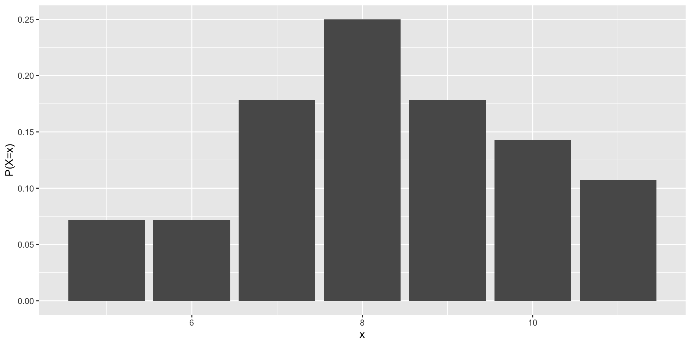

Probability
Random Variables, Probability Distributions
Population versus Sample
Population – The set of all objects under consideration. Objects in a population are called elements.
Examples
Boxes of a particular brand of corn flakes.
Newly made light bulbs in a warehouse at a given time.
Another Definition of Population
All possible outcomes of an experiment can also be values in a population.
Flipping a coin twice. Possible outcomes are:
HH, HT, TH, TT. Could make the outcomes numeric using 3, 2, 1, 0 to be the elements corresponding to the above events.If the experiment is repeated many times, the resulting values constitute a population: \(2,\ 0,\ 3,\ 1,\ 0,\ 2,\ \dots\)
Random Sampling
Sample – A subset of the elements from a population.
Simple Random Sample of size \(n\) from a finite population is a subset selected in such a way that every subset of \(n\) elements is equally likely to be the one selected. (Abbreviation: SRS)
A random sample from a small finite population can be obtained using the Random Numbers - using code or random number table.
- sample(1:100,3) or sample(3)
Computer programs are used to draw samples from large populations.
Probability, Random Variables, and Probability Distributions
Assume a numeric finite population of \(N\) elements, and suppose \(n_1\) of the elements are the number \(k\).
Suppose a SRS of size 1 is taken from this population.
The probability that the number \(k\) is selected is \(n_1/N\).
That is, we define this probability to be the relative frequency of occurrence of \(k\) in the population.
Probability: Example
Example: \(N = 10\)
Population: 1, 1, 1, 3, 7, 7, 9, 9, 9, 9
Denote by \(P(k)\), the probabilty of the number k being selected
\(P(1) = 3/10\), \(P(3) = 1/10\), \(P(7) = 2/10\),
\(P(9) = 4/10\), \(P(2) = 0/10\), \(P(1~\mbox{or}~3) = 4/10\),
\(P(\mbox{not}~7) = 1-2/10\).
Random Variables
A random variable is a function defined on a numeric population. We will often say that this function value is the value assumed by the random variable.
Example: \(N = 10\)
Population: 1, 1, 1, 3, 7, 7, 9, 9, 9, 9
Let \(X\) be a random variable defined on this population.
\(X\) can assume any of the values 1, 3, 7, or 9.
Random Variables (continued)
A Random variables are different from ordinary variables because they assume values from the population with associated probabilities.
For e.g., we will say
\(P(X=1)=3/10\), \(P(X=7)=2/10\),
\(P(X=2)=0/10\), \(P(X=-6)=0/10\),
\(P(1 \leq X \leq 3)=4/10\), \(P(1 \leq X \leq 9)=1\). etc.A probability distribution specifies the probabilities associated with all possible values the random variable \(X\) can assume.
The M & M Example
Example:
If X represents the number of RED \(M\&Ms\) in a vending machine size package, then perhaps the probability distribution of \(X\) is something like the following:
| \(x\) | 5 | 6 | 7 | 8 | 9 | 10 | 11 |
|---|---|---|---|---|---|---|---|
| \(P(X=x)\) | \(\frac{2}{28}\) | \(\frac{2}{28}\) | \(\frac{5}{28}\) | \(\frac{7}{28}\) | \(\frac{5}{28}\) | \(\frac{4}{28}\) | \(\frac{3}{28}\) |
The M \(\&\) M Example (continued)
We read this table by finding a value of X, say 8, then reading the probability below it:
- The probability of observing 8 M\(\&\)Ms in a package is \(\frac{7}{28}\), meaning, if we open many many packages of M\(\&\)Ms, about 7 out of 28 will have exactly 8 M&Ms within.
This is an example of a discrete random variable.
Discrete Random Variables
When the elements of a population consists of a countable discrete set of values the random variable defined on that population is called discrete random variable.
For discrete random variables the probability distribution can be displayed using a histogram or a table of values and associated probabilities as shown above.
Properties of Probability Distributions of Discrete Random Variable X
\(0\leq P(X=x)\leq 1\) for all x
\(\sum_{x}P(X=x)=1\)
The M & M Probability Distribution
Continuous Random Variables
When the population consists of an uncountable number of values in a line interval use integration to calculate proportions of the population that exist in any given subinterval of a continuum.
For a random variable defined on such a population we will deal with the probability that the random variable assumes a value in a given interval, not that it assumes a specific numeric value.
Continuous Random Variables (contd.)
When the population consists of a set of values in a continuous range the random variable defined on that population is called continuous random variable.
The probability distribution of a continuous random variable is a smooth curve.
The area under the curve between specified values of the random variable correspond to a probability.
The probability that a continuous random variable assumes a specific numeric value is zero.
Continuous Random Variables (contd.)
Example: A Continuous Random Variable \(X\) defined on
a Population: all numbers in the interval (0,2) occurring with various frequencies (that we won’t specify here).
By Definition
\(P(1/2 \leq X \leq 1/2) \equiv P(X = 1/2) = 0\)
\(P(0 \leq X \leq 2) = 1,\ \ \ P(X < 0) = P(X \leq 0) = 0\)We could possibly calculate the following probability
\(P(1 \leq X \leq 2) = ?\)
Binomial Random Variable
For some interesting populations that occur naturally, theoretical probability distributions and associated random variables, have been defined.
One such population features elements that are only one of two kinds (Yes or No; Good or Defective; Below or Above;, etc.).
Let us use Success(S) and Failure(F) to designate population elements, in general
Consider a typical population of this kind consisting of \(m\) S’s and \(N-m\) F’s, where \(N\) is the total number of elements in the population.
Binomial Experiment
A binomial experiment consists of taking \(n\) successive SRS, each of size 1, replacing elements between draws, and counting the number of S’s obtained.
The binomial experiment is conducted by sampling from the population of S’s and F’s.
The proportion of S’s in the population is \(\pi = m/N\) so the proportion of F’s is \(1 - \pi \equiv (N-m)/N\).
Let \(X_i\) be the random variable that assumes the value of the outcome of the \(i\)-th draw for each \(i=1,2,\ldots,n\).
Binomial Distribution
Let the random variable \(X_i\) assume the value 1 if the outcome of the \(i\)-th draw is S or the value 0 if the outcome is F.
Thus we imagine \(n\) random variables, \(X_1, X_2, X_3, \ldots, X_n\) each assuming a value S with probability \(\pi\), or F with probability \(1 - \pi\).
That is, the probability distribution of each of the \(n\) random variables \(X_1, X_2, X_3, \ldots, X_n\) is given by:
\(x\) 0 1 \(P(X=x)\) \(1-\pi\) \(\pi\)
Binomial Distribution (contd.)
Now define a new random variable \(Y\) so that \[Y = X_1 + X_2 + X_3 + \cdots + X_n \,\]
\(Y\) represents the number of Success(S)’s in the set of values assumed by \(X_1,\ X_2, \ldots,X_n\).
This is because each \(X_i=1\) when an S is drawn, and \(X_i=0\) otherwise, we can see that \(Y\) represents the total number of S’s in the experiment.
\(Y\) is said to be a binomial random variable.
Binomial Distribution (contd.)
That is, a binomial random variable assumes the value of the total number of successful outcomes in a binomial experiment.
The random variable \(Y\) can assume any one of the values 0, 1, 2, \(\ldots, n\) with a probability that will depend on \(n\), the number of samples taken and \(\pi\).
\(Y\) is said to be the Binomial (\(n,\pi\)) random variable.
A population on which \(Y\) is defined consists of the unique elements \(0,1,2,\ldots,n\).
What is the proportion of each element in the population? i.e., What is the probability that \(Y\) assumes each value?
Binomial Distribution (contd.)
Theoretically, for any finite \(n\), the probability that a
binomial random variable \(Y\) takes on values 0, 1, 2, \(\dots, n\)
is given by
\[\begin{eqnarray*}
P(Y=y) & = & \frac{n!}{y!(n-y)!}\pi^y\,(1 - \pi)^{n-y}, \\
\mbox{where} & & \\
y & = & 0, 1, 2, \ldots, n \mbox {(number of successes in n trials)}\\
\pi & = & \mbox{ probability of success in a single trial}\\
1-\pi & = & \mbox{ probability of failure in a single trial}\\
n! & = & n(n-1)(n-2) \ldots (3)(2)(1)
\end{eqnarray*}\]
Binomial Distribution (contd.)
In applications, we won’t know \(\pi\) and our objective will usually be to sample the population in order to estimate \(\pi\), and get an idea about the error in that estimate.
What is the mean \(\mu\) and variance \(\sigma^2\) (or the standard deviation) \(\sigma\) of a binomial random variable?
In general, for a discrete random variable, these are defined is as follows.
Computing the Mean and Variance of a Discrete Random Variable
The mean of a discrete random variable \(X\) is: \[E(X) = \mu = \sum_x\,x \cdot P(X=x)\]
The variance of a discrete random variable \(X\) is: \[V(X) = \sigma^2= \sum_x\,(x - E(X))^2\cdot \ P(X=x)\]
The standard deviation of a random variable \(X\) is \[\sqrt{V(X)}=\sigma\]
Computing the Mean and Variance of a Binomial Random Variable
Using the above formula, the mean of a Binomial random variable \(Y\), is shown to be \(E(Y)=\mu = n \, \pi\)
The variance is shown to be \(V(Y) =\sigma^2= n\,\pi(1 - \pi)\).
Thus the standard deviation of a Binomial random variable is \(\sigma= \sqrt{n\,\pi(1 - \pi)}\)
Binomial Distribution: Example
Consider a Binomial population with \(n=3,\ \pi = \frac13\),
i.e., \(Y\ \sim\ \mbox{Bin}(3,\,\frac13)\), The corresponding Binomial distribution is
\[\begin{eqnarray*}
P(0) &=& \frac{3!}{0!3!} \left(\frac13 \right)^0 \left( \frac23
\right)^3 = 8/27\\[.1in]
P(1) &=& \frac{3!}{1!2!} \left(\frac13 \right)^1 \left( \frac23
\right)^2 = 3 \cdot \left( \frac13
\right)\, \left(\frac49 \right) = 12/27 \\[.1in]
P(2) &=& \frac{3!}{2!1!} \left(\frac13 \right)^2 \left( \frac23
\right) = 3 \cdot \left( \frac19
\right)\, \left(\frac23 \right) = 6/27 \\[.2in]
P(3) &=& 1 - P(0) - P(1) - P(2) = 1/27
\end{eqnarray*}\]
Binomial Distribution: Example (contd.)
The mean and variance of a Bin(\(3,\frac{1}{3}\)) population is:
Mean \(= n \, \pi = 3 \times\frac{1}{3} = 1\)
Variance \(= n\,\pi(1 - \pi) = 3 \times\frac{1}{3}\times\frac{2}{3} = \frac{2}{3}\)
Standard Deviation \(= \sqrt{.66667} = .8165\)
Using the Binomial Distribution
So how can this Binomial probability distribution benefit us?
When sampling situation fits the requirements of a Binomial experiment, (at least approximately) we can view the results we obtain as the values assumed by a binomial random variable.
This permits us to find probabilities of various possible outcomes, and use these and other properties of a binomial random variable to make inferences.
To assume the Binomial Model, we need to determine whether the values of the population elements are obtained as a result of a Binomial Experiment.
The Binomial Model
\(n\) identical trials are made.
Each trial results in either Success(\(S\)) or Failure(\(F\)). (only two possible outcomes).
The probability of success (\(\pi\)) remains the same from trial to trial.
The trials are independent.
Interest is in the number of successes obtained in the \(n\) trials. The number is viewed as being the value assumed by a Binomial (\(n,\ \pi\)) random variable \(Y\).
The Binomial Model
Requirement Number 3 in the definition of a binomial experiment is usually the most difficult to satisfy in practical applications.
As trials are made, if selected elements are not replaced in the sampled population, \(\pi\) changes in value.
If the population is very large, the change is very small and can be ignored.
Binomial Model: Are requirements satisfied? - Example 1
An article in the March 5, 1998, issue of The New England Journal of Medicine discussed a large outbreak of tuberculosis. One person, called the index patient, was diagnosed with tuberculosis in 1995. The 232 co-workers of the index patient were given a tuberculin screening test. The number of co-workers recording a positive reading on the test was the random variable of interest. Did this study satisfy the properties of a binomial experiment?
Binomial Model: Are requirements satisfied? - Example 1
\(n\) identical trials? Yes, \(n=232\) workers
Population of only \(S\)’s and \(F\)’s? Yes.
Is probability of success same in each trial? Yes if we assume the co-workers had the same risk factors as the index patient.
Independent trials? Yes, the outcome of one screening was unaffected by the outcome of the other tests.
Was the random variable of interest to the experimenter the number of successes \(y\) in the 232 screening tests? Yes, the number of co-workers who received a positive result.
Binomial Model: Are requirements satisfied? - Example 2
An economist interviews 75 students in a class of 100 to estimate the proportion of student who expect to obtain a C or better in the course. Is this a binomial experiment?
Binomial Model: Are requirements satisfied? - Example 2
Population of only \(S\)’s and \(F\)’s? Yes.
Is probability of success same in each trial? This may change from trial to trial as we may not assume sampling with replacement.
Binomial Example
A labor union’s examining board for the selection of apprentices has a record of admitting 70% of all applicants who satisfy a basic set of requirements. Five members of a minority group, all satisfying the requirements, recently came before the board, and four of the five were rejected. Find the probability that 1 or fewer would be accepted if the admission rate is really 0.70.
Binomial Example - cont.
Board decisions are viewed as random draws from a population consisting of \(70\%\) Accepts (S) and \(30\%\) Rejects (F).
We can assume a large population so that the probability of being accepted remains constant across draws.
Then the Binomial (5,0.7) distribution is applicable to the number of Accepts in \(n=5\) trials with \(\pi=0.7\).
Binomial Example - cont.
Let \(X\) be the random variable representing the number of Accepts, and assume that \(X\) has a Binomial (5, 0.7) distribution. Then P(X=0) + P(X=1) =
\({5}\choose{0}\) \((0.7)^0(0.3)^5+\) \({5}\choose{1}\) \((0.7)(0.3)^4=0.03078\)The probability that the board will accept fewer than 2 applicants from a group of 5 is 0.03078 (which is a small probability) if indeed the true acceptance rate is 0.7.
Binomial Example - cont.
But in fact the board DID accept fewer than 2 of the group of 5 so .......….
Conclusion: Either the board was operating to admit at its historical 70% rate and we have simply witnessed an extremely rare event, or
the board has changed policy and is currently admitting at a rate less than 70%.
One would tend to favor the latter conclusion.
Normal Random Variable
The Normal probability distribution is an example of a continuous distribution.
The associated random variable is defined in the interval (-\(\infty,\infty)\).
To model the probability distribution of many populations we often use the Normal distribution.
Most population distributions are bell-shaped and can be modeled by the Normal distribution.
We say that the associated random variable \(X\), say,
Here \(\mu\) and \(\sigma\), are parameters of the population.
Properties of the Normal Distribution
Probability function (or curve) of a Normal random variable \(X\) is \[\begin{equation*} f(x) = \frac{1}{\sigma \sqrt{2\pi}} \, e^{- \frac{1}{2} \left(\frac{x-\mu}{\sigma}\right)^2} \end{equation*}\] where
\(E(X)= \mu\) = mean : measures the center of the distribution.
\(V(X)= \sigma^2\) = variance : measures the spread.
\(\sqrt{V(X)}= \sigma\) = standard deviation : measures the spread in same units as the mean.
\(\pi\) = 3.1415… \(e\) = 2.71828…
Properties of the Normal Distribution (contd.)
The Normal distribution is symmetric about the mean \(\mu\).
There are infinitely many Normal curves, one for each pair of values of \(\mu\) and \(\sigma\).
We need to compute the areas under the curve for many of these for statistical inference.
Mathematically speaking, proportions of a Normal\((\mu, \sigma^2)\) population which fall in various intervals (say (\(a,b\)) is one such interval) are obtained by evaluating the following integral (for specified values of \(\mu, \sigma^2\), \(a\) and \(b\)). \[\begin{equation*} P(a \leq X \leq b) = \frac{1}{\sqrt{2\pi}\sigma} \int_a^b \, e^{-\frac{1}{2}\left(\frac{x-\mu}{\sigma}\right)^2} dx \end{equation*}\]
The Standard Normal Distribution
Table 1 lists the computed areas for the Normal distribution with \(\mu = 0\), \(\sigma = 1\).
We call this the standard normal distribution and denote it by \(N(0,1)\).
The relationship between a standard normal random variable \(Z\) and a normal random variable \(X \sim N(\mu, \sigma^2)\) is \[Z = \frac{X-\mu}{\sigma}.\]
The Standard Normal Distribution (contd.)
Thus (since \(\sigma > 0\)) for any pair of numbers \(a \leq b\), \[\begin{eqnarray*} P(a \leq X \leq b) & = & P(\frac{a-\mu}{\sigma} \leq \frac{X-\mu}{\sigma} \leq \frac{b-\mu}{\sigma})\\ & = & P(\frac{a-\mu}{\sigma} \leq Z \leq \frac{b-\mu}{\sigma}) \end{eqnarray*}\]
Thus we can compute probabilities for \(X\) for any member of the normal family using the probabilities associated with \(Z\) which are available from the Standard Normal Probabilities table.
The Standard Normal Distribution (contd.)
The \(p\) quantiles of a Normal (\(\mu,\sigma^2\)) population are real numbers (use \(x_p\) to denote the \(p\) quantile) such that \[p = \int_{-\infty}^{x_p} \; \frac{1}{\sqrt{2\pi}\sigma} \, \,e^{-\frac12(\frac{x-\mu}{\sigma})^2} \; dx\]
If you can find a value \(x\) that satisfies the above equation then that value will be the \(p^{th}\) quantile of the \(N(\mu,\sigma^2)\) population i.e., \(x = Q(p)\).
The standard normal quantiles are the \(z\)-values found from the Standard Normal Probabilities table for specified \(p\) values that are in the body of the table.
Examples: Using the Standard Normal Probabilities table
\(P(Z \geq 0) = P(Z \leq 0) = 0.50\)
\(P(0 \leq Z \leq 0.12) \equiv P(0 < Z < 0.12) \hspace*{1.5in}=P(Z<0.12)-P(Z<0)=0.5478-0.5 = 0.0478\)
\(P(-0.12 \leq Z \leq 0) =P(Z<0)-P(Z<-0.12) = 0.5-.4522=0.0478\)
\(P(-0.12 \leq Z \leq 0.12) = 2 \cdot P(0 \leq Z \leq 0.12) = 0.0956\)
\(P(0 \leq Z \leq 3) = 0.9987-0.5=0.4987\)
\(P(1 \leq Z \leq 3 ) = P(Z \leq 3)- P(Z \leq 1) = 0.9987 - 0.8413 \hspace*{1in}=0.1574\)
Examples: Using the Standard Normal Probabilities table
Find \(z\) such that \(P(0 \leq Z \leq z) = 0.4846\) Equivalent to finding \(z\) such that \(P(Z \leq z) = 0.9846\) which gives \(z = 2.16\)
Find \(z\) such that \(P(z \leq Z \leq 0) = 0.2257\)
Equivalent to finding \(z\) such that \(P(Z \leq z) = 0.2743\) which gives \(z = -0.60\)Find \(z\) such that \(P(Z \geq z) = 0.011\)
Equivalent to finding \(z\) such that \(P(Z \leq z) = 0.9890\) which gives \(z = 2.29\)
Examples for \(X \sim N(\mu, \sigma^2)\)
When \(\mu = 1\), \(\sigma = 2\), calculate \(P(0 \leq X \leq 1)\) = \(P(\frac{0-1}{2} \leq Z \leq \frac{1-1}{2})= P(-0.5 \leq Z \leq 0) = 0.5-0.3085=0.1915\)
When \(\mu = 3\), \(\sigma=4\),calculate \(P(2 \leq X \leq 4)\) = \(P(\frac{2-3}{4} \leq Z \leq \frac{4-3}{4})\) = \(P(- 0.25 \leq Z \leq 0.25)\) \(= 0.5987-0.4013=0.1974\)
Find the 0.25 quantile of the normal population having \(\mu = 3\), \(\sigma = 4\). Find x so that \(P(X \leq x) = 0.25,\) or \(P(Z \leq \frac{x-3}{4}) = 0.25\) \(\frac{x-3}{4} \doteq -0.67 \Rightarrow x \doteq 3+ 4 \times (-0.67)= 0.32\)
Sampling Distribution of Sample Mean \(\bar{Y}\).
The outcome of drawing a random sample of size \(n\) can be characterized as the value realized by each of \(n\) random variables \(Y_1, Y_2, \ldots, Y_n\), each defined independently on the population.
Thus the Sample Mean \[\overline{Y} = \frac1n \sum_{i=1}^n Y_i\] (or any other function of \(Y_1, Y_2, \ldots, Y_n\)) is a random variable.
Sampling Distribution of Sample Mean \(\bar{Y}\).
The probability distribution of \(\overline{Y}\) is said to be the Sampling Distribution of \(\overline{Y}\).
It is the derived population of means of all possible samples of size \(n\) taken from the sampled population.
Properties of \(\overline{Y}\) include \(E(\overline{Y}) = \mu\), and \(V(\overline{Y}) = \sigma^2/n,\) where \(\mu\) and \(\sigma^2\) are the population mean and variance of the original sampled population.
The standard deviation of \(\overline{Y}\) is called Standard Error of the Mean and is written \(\sigma_{\overline{Y}}\).
The Central Limit Theorem
The following theorem shows why the normal family of distributions is so important.
Assume sampling is from some finite or infinite population with parameters \((\mu,\,\sigma^2)\). Let \(Y_1, Y_2, \ldots, Y_n\) denote the random variables corresponding to a sample of size \(n\)
Let \(\overline{Y} = \frac1n \displaystyle\sum_{i=1}^n Y_i\).
Central Limit Theorem (CLT)
When sample size \(n\) is large, the random variable \(\bar{Y}\) is approximately normally distributed with mean \(\mu\) and variance \(\sigma^2/n\). (i.e., \(\overline{Y} \approx N (\mu, \sigma^2/n\)))
Using the Central Limit Theorem
The approximation can be very close for \(n\) as small as 10 if the sampled population elements are symmetrically distributed around \(\mu\).
For mildly skewed sampled populations, \(n=30\) can give a close approximation. For higher skewed populations larger \(n\) will be needed for a better approximation.
So, the CLT says that regardless of the distribution of the sampled population, the derived population of the sample means is approximately a normal population and the approximation gets better as \(n\) gets larger.
Central Limit Theorem: Example
Estimating average weight of sheep in a large herd. Random sample of size \(n=50\). Assume \(\sigma^2=4\). but \(\mu\), population mean animal weight in the herd is unknown.
What is the approximate probability distribution of the sample mean random variable?
If \(\mu=40\) what is the probability that the sample mean will be within 0.1 pounds of \(\mu\)?
Answer:
- By the CLT, \(\overline{Y} \approx N (\mu, 4/50)\)
Example continued
\[\begin{eqnarray*} {P(39.9 \leq \bar{Y} \leq 40.1) \doteq }\\[.1in] & & P\left(\frac{39.9-40}{\sqrt{4/50}}\right. \left.\leq z \leq \frac{40.1-40}{\sqrt{4/50}}\right) \\[.2in] & = & P\left(\frac{-\sqrt{50}}{20} \leq z \leq \frac{\sqrt{50}}{20}\right) \\[.3in] & = & P\left(-0.35 \leq z \leq 0.35\right) \\[.3in] & = & 0.6368-0.3632=0.2736 \end{eqnarray*}\]
Exercise
A random sample of 16 measurements is drawn from a population with a mean of 60 and a standard deviation of 5. Describe the sampling distribution of \(\bar{y}\), the sample mean. Within what interval,symmetric about 60, would you expect \(\bar{y}\) to lie approximately 95% of the time?
Solution to Exercise:
\(\bar{Y} \approx N(60, \frac{25}{16})\)
\(Z = \frac{\bar{Y}-60}{5/4} \approx N(0,1)\)
We know \(P(-z_{\frac{0.05}{2}} \leq Z \leq z_{\frac{0.05}{2}}) = 0.95\) and \(z_{0.025} = 1.96\) from the Standard Normal Probabilities Table
Solution to Exercise (cont.)
Thus \(P(-1.96 \leq Z \leq 1.96) =.95\) which implies that a value of \(Z\) is expected to lie in the interval \([-1.96, \, 1.96]\) approximately 95% of the time
\(-1.96 \leq \frac{\bar{y}-60}{5/4} \leq 1.96\)
\(60 - 1.96 \times \frac54 \leq \bar{y} \leq 60 + 1.96 \times \frac54\) giving \(57.55 \leq \bar{y} \leq 62.45\)
Thus \([57.55, \, 62.45]\) is the interval in which \(\bar{y}\), the is expected to lie approximately 95% of the time
Exercise 2
Psychomotor retardation scores for a large group of manic-depressive patients were found to be approximately normal with a mean of 930 and a standard deviation of 130.
What fraction of the patients scored between 800 and 1,100?
Less than 800?
Greater than 1200?
Find the 90th percentile for the distribution of manic-depressive scores.
Find the interquartile range.
Solution to Exercise 2:
d.) \(P(Z < a) = 0.90\) From the Standard Normal Probabilities Table, a = 1.28
Set \(\frac{y - 930}{130} = 1.28\) and solving for \(y\) gives \(y = 930 + 166.4\)
Thus \(= 1096.4\) is the 90th percentile; or the 0.9 quantile.
e.) \(\begin{array}{l|l}
P(Z < a) = 0.75 & P(Z < a) = 0.25\\
\mbox{gives } a = 0.675 & \mbox{gives } a = -0.675\\[.1in]
\mbox{Set } \frac{y-930}{130} = 0.675 & \mbox{Set } \frac{y-930}{130} = -0.675\\[.1in]
\mbox{Thus } Q(0.75) = 930. + 87.75 & \mbox{Thus } Q(0.25)= 930 -87.75 \\
= 1017.25 & = 842.25
\end{array}\)
Thus IQR \(= 1017.25- 842.25 = 175.50\)
Another Exercise
The breaking strengths for 1-foot-square samples of a particular synthetic fabric are approximately normally distributed with a mean of 2,250 pounds per square inch (psi) and a standard deviation of 10.2 psi.
Find the probability of selecting a 1-foot-square sample of material at random that on testing would have a breaking strength in excess of 2,265 psi.
Describe the sampling distribution for \(\bar{y}\) based on random samples of 15 one-foot sections.
Another Exercise - Solution
\(Y \sim N(2250, (10.2)^2)\)
\[\begin{eqnarray*} P(Y > 2265) & = & P\left(Z > \frac{2265-2250}{10.2}\right)\\[.2in] & = & P(Z > 1.47) = 0.07078 \end{eqnarray*}\]\(\overline{Y} \approx N\left(2250, \frac{(10.2)^2}{15}\right)\)
i.e., \(\overline{Y}\) is approximately distributed as Normal with mean=\(\mu_{\bar{y}}=2250\) and standard deviation=\(\sigma_{\bar{y}} = 2.63\)
Poisson Distribution
Poisson distribution is used to model the number of occurrences of “rare” events in certain intervals of time and space.
Certain conditions must be met regarding the occurrence of these events and the definition of the period of time or region of space in which they occur for a Poisson random variable to represent the number of events.
A Poisson random variable is a discrete random variable as it represents a count.
Poisson Distribution - Examples
\(X\) = # of alpha particles emitted from a polonium bar in an 8 minute period
\(Y\) = # of flaws on a standard size piece of manufactured product (e.g., 100m coaxial cable, 100 sq.meter plastic sheeting)
\(Z\) = # of hits on a web page in a 24h period
Definition: The Poisson probability mass function is defined as:
\(p(x) = \frac{e^{-\lambda}\lambda^{x}}{x!} \hspace{1cm} \rm{ for }\ x = 0,1,2,3,\ldots\)
\(\lambda\) is called the mean parameter, and represents the expected number of events occuring in the interval of interest.
Computing Mean and Variance of a Poisson Random Variable
Expected Value of \(X \sim Poi({\lambda})\) is:
- \(E[X]= \sum_{x=0}^{\infty} x\frac{e^{-\lambda}\lambda^{x}}{x!} = e^{-\lambda}\sum\limits_{x=0}^\infty\frac{\lambda^x}{(x-1)!}=e^{-\lambda}\lambda\sum\limits_{x=1}^\infty x\frac{\lambda^{x-1}}{(x-1)!}= e^{-\lambda}\lambda\sum\limits_{x=0}^\infty x\frac{\lambda^x}{x!}=\lambda\)
Variance of \(X \sim Poi({\lambda})\) is:
- \(\rm{Var}[X] =\sum_{x=0}^{\infty} (x-\lambda)^2 \{\frac{e^{-\lambda}\lambda^{x}}{x!}\} =\ldots = \lambda\)
Poisson distribution: Example
A manufacturer of chips produces 1% defectives. What is the probability that in a box of 100 chips no defectives are found?
Solution: A defective chip can be considered to be a rare event, since \(p\) is small (\(p = 0.01\)). So, model \(X\) as Poisson random variable.
We need to obtain a value for \(\lambda\)! Look at the expected value!
Note that we expect \(100 \cdot 0.01\) = 1 chip out of the box to be defective.
We know that the expected value of \(X\) is \(\lambda\). In this example, therefore, we take \(\lambda = 1\).
Then \(P(X=0) = \frac{e^{-1}1^{0}}{0!} = 0.3679.\)
Poisson distribution: Example (cont.)
For the same product, what is the probability that, in a box of 200 chips, no defectives are found?
Solution: The number of defectives in a box of 200 chips \(Y\) has a Poisson distribution with parameter \(\lambda=2\) (since the expected number of defectives in 200 chips is 2.)
Then, we have \(P(Y=0)= .1353\)
Note that \(X\) and \(Y\) are random variables with different Poisson distributions because the events they represent occur in different regions (two different boxes here).
Poisson to approximate Binomial
Result (not a theorem): For large \(n\), the Binomial distribution can be approximated by the Poisson distribution, where \(\lambda\) is taken as \(n\pi\): \[{n \choose k} \pi^{k}(1-\pi)^{n-k} \approx e^{-n\pi}\frac{(n)^{k}}{k!}\] Rule of thumb: use Poisson approximation if \(n \ge 100,\ \pi \le 0.01\) and \(n\pi \leq 20\)